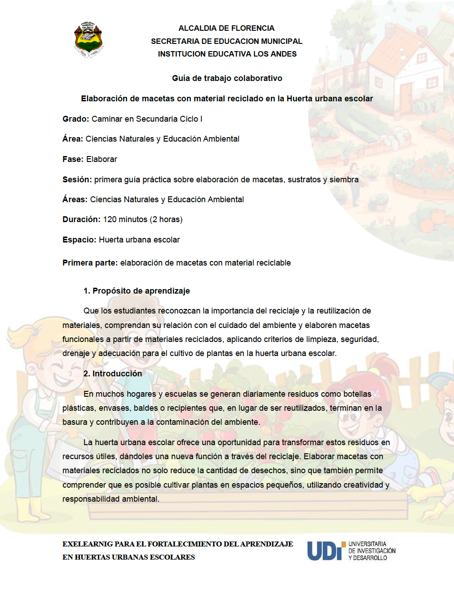
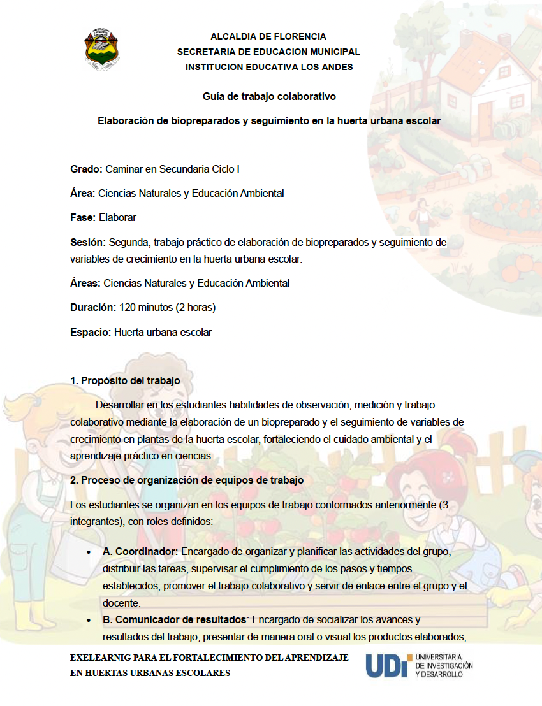

Actividad para elaborar
1. Descripción de la actividad
Actividad práctica en la huerta escolar donde los estudiantes, en trabajo colaborativo, aplican los conocimientos adquiridos y usan herramientas digitales para registrar y presentar los procesos realizados.
2. Tiempo de ejecución de la actividad
La actividad de aprendizaje se desarrollará a través de dos sesiones, la cual tendrá una duración de 120 minutos (2 Horas) cada una y un total de 240 minutos (4 Horas).

3. Desarrollo de la actividad
1. INSTRUCCIONES
Para el desarrollo de la actividad los estudiantes deben conformar equipos de trabajo de máximo 3 integrantes, los cuales van a desarrollar la guía de trabajo colaborativo cargada en el tablero de Google Drive, de esta manera, los participantes deben revisar todos los documentos cargados y las instrucciones dispuestas como material de apoyo para el correcto desarrollo de la actividad.
2. DESARROLLO
2.1. CONFORMACIÓN DE EQUIPOS
Instrucciones: Por medio del uso de la herramienta digital Google Forms los estudiantes deben conformar sus equipos de trabajo (los cuales no pueden superar el máximo de 3 integrantes), así como la selección de las especies vegetales con las que va a trabajar y el rol que llevará a cargo en el equipo de trabajo:
- A. Coordinador.
- B. Comunicador de resultados.
- C. Registrador y analista de datos.
2.1.1. FORMULARIO PARA LA CONFORMACIÓN DE EQUIPOS
2.2. PRIMERA SESIÓN
Trabajo práctico de elaboración de macetas, preparación de sustratos y proceso de siembra en la huerta urbana escolar.
Duración: 120 minutos (2 Horas)
2.2.1. GUIA DE TRABAJO COLABORATIVO
Instrucciones: los estudiantes deben revisar las instrucciones que se incluyen en la siguiente guía de trabajo colaborativo para desarrollar la fase práctica del curso, seguidamente deben realizar el producto que se describe en la guía como evidencia de aprendizaje de la sesión, la cual debe ser cargada en el apartado 4 (actividad de aprendizaje) de esta fase.

Dar click en el siguiente enlace de acceso para descargar la guía de trabajo colaborativo:
https://drive.google.com/file/d/1dAFFXDSLIkv5XXk7VX5j1ZwXfvjvbqFO/view?usp=sharing
2.3. SEGUNDA SESIÓN
2.3.1. GUIA DE TRABAJO COLABORATIVO
Trabajo práctico de elaboración de biopreparados y seguimiento de variables de crecimiento en la huerta urbana escolar.
Duración: 120 minutos (2 Horas)
Instrucciones: los estudiantes deben revisar las instrucciones que se incluyen en la siguiente guía de trabajo colaborativo para desarrollar la fase práctica del curso, seguidamente deben realizar el producto que se describe en la guía como evidencia de aprendizaje de la sesión, la cual debe ser cargada en el apartado 4 (actividad de aprendizaje) de esta fase.

Dar click en el siguiente enlace de acceso para descargar la guía de trabajo colaborativo:
https://drive.google.com/file/d/1aG5lscupWd1x73Ql15XbwIaAb3pny1sh/view?usp=sharing
4. Actividad de aprendizaje
1. INSTRUCCIONES
Los estudiantes deben presentar un producto final de la actividad por cada uno de los grupos conformados con anterioridad (un solo trabajo por grupo) con el cual demuestren los procesos de aplicación grupal de las temáticas desarrolladas, para ello, se debe cargar el producto de cada sesión, según como corresponda en la herramienta en linea de Google Drive.
2. DESARROLLO
2.1. PRIMERA SESIÓN
Producto de trabajo práctico de elaboración de macetas, preparación de sustratos y proceso de siembra en la huerta urbana escolar.
2.1.1. DRIVE DE EVIDENCIAS
Instrucciones: dar click en el siguiente enlace de acceso para abrir el drive de evidencias de la primera sesión, en el cual, se debe cargar un solo archivo por equipo de trabajo, nombrado de la siguiente forma; equipo, número que corresponda, sesión y número que corresponda (ejemplo; equipo_1_sesion_1):
https://drive.google.com/drive/folders/1hYD8JS3kCOZy6gTWMx1G3iDYBVYpc8vw?usp=sharing
2.2. SEGUNDA SESIÓN
Producto de trabajo práctico de elaboración de biopreparados y seguimiento de variables de crecimiento en la huerta urbana escolar.
2.2.1. DRIVE DE EVIDENCIAS
Instrucciones: dar click en el siguiente enlace de acceso para abrir el drive de evidencias de la primera sesión, en el cual, se debe cargar un solo archivo por equipo de trabajo, nombrado de la siguiente forma; equipo, número que corresponda, sesión y número que corresponda (ejemplo; equipo_1_sesion_2):
https://drive.google.com/drive/folders/1usMb2LoyLFoAVcnsAGpPZ0zS9lYrtDu2?usp=sharing